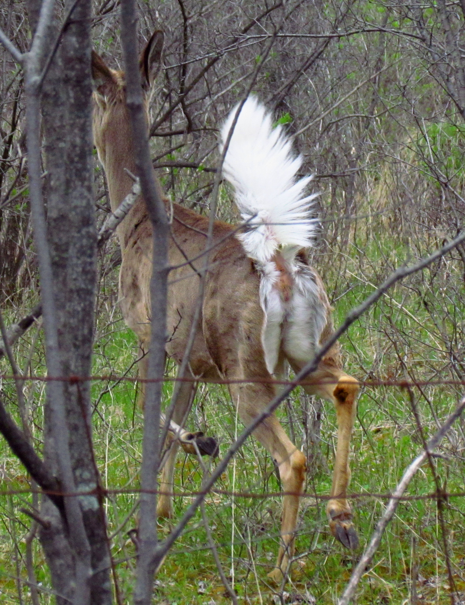

Whitetail Deer

The Whitetail Deer, or Odocoileus Virginianus is one of
the most widespread large mammals in
North America. It is often
hunted as a big game animal. It is a fairly hardy animal, able to live in many environments.
Habitat
- North America
- Central America
- Southern Canada
- South America
- Europe
They can live in many environments, but prefer living in forest environments. Deer especially enjoy coniferous forests in the winter specifically, to shield from tough conditions. They tend to find one environment with a sufficient amount of food, then stay there for much of their lifetime. They enjoy having many different settings at hand, such as forest, farmland, and high brush (for bedding).
Video courtesy of The Wildlife Channel on YouTube
Behavior
 Whitetail Deer are very majestic animals, with extremely useful senses, some of which are more powerful than that of humans. Whitetails have white tails, hence the name, which act as a "flag" showing their alarm when they lift it. This tail allows the fawns to better locate their mother. They are mostly nocturnal/crepuscular, meaning they move mainly at dawn and dusk, bedding down in the periods in between. The deer mostly bed down in same-sex groups in high grasses and weeds, with places near water being even better. They tend to travel in groups of 3 to 5, with the dominant male in the front. They are herbivores, eating corn, lichen, fruits, mosses nuts, alfalfa, and especially enjoy soybeans (when available). In the spring and summer, they eat green plants. In the fall and winter, however, they eat acorns, other nuts, corn, and woody twigs. Their sense of smell is significantly stronger than humans, and they rely heavily upon it. However, their vision is a wide 310 degree angle view allowing them to see mostly everywhere around them. They do not see in the same colors as humans, colors in the blue to dark green range stick out, with reds and yellows being harder to detect (which is why hunters use blaze orange).
Characteristics
Deer are quite lean animals, mostly free of fat, unlike cattle. Whitetails weigh anywhere from 37 lbs (16.7 kg) to 340 lbs (154.2 kg). They are light brown to tan in the summer, and take on a greyish color in the fall and winter. In 3 to 4 months after their birth, fawns lose their distinctive white spots. However, nearly all whitetails have white under their jawbone, a ring around their nose, around the neck, and under their stomach. Males are defined by their antlers, a fast growing tissue which are formed starting in the spring. They can grow up to 1/2 inches (1.3 cm) a day. While the antlers grow they are soft, and are protected by velvet, which is a soft-feeling tissue covering them. They shed their antlers in September in most cases, and turn hard. The antlers on yearling bucks are like stubs, not yet exposed but poke slightly upwards on the skin, but can also be a few inches long (called "button bucks").
Life Cycle
The deer mating season, or the Rut, starts in late October stretching out into early November. In this period the males fight for dominance using their antlers. These fights determine who will mate with the does. The bucks are polygamous, and fighting for dominance ensures that the deer are strong. There are typically 1 to 3 fawns born to each doe, and they are birthed in the spring, about six months after the Rut. They are born with fur and are able to stand in ten minutes, and walk in seven hours after birth. The mother goes to great lengths to protect her fawns. When she is away, the fawns lay down and stay hidden from predators. Wild deer typically live to three years of age, with captive deer in perfect health can live up to twenty years.
Diseases
Chronic Wasting Disease
Diseases are very important for hunters who are concerned about the welfare of their whitetail herd. One of the biggest diseases destroying previously healthy herds is CWD, or Chronic Wasting Disease. CWD is a prion disease that affects brain and other functioning of deer mentality. Prions are misfolded proteins spread by blood, feces, saliva, and other bodily fluids. The reason this disease is such a big deal is due to the fact that any deer can hold this disease for up to two years, and then die. The death of infected animals is inevitable, and symptoms do not usually show. However, late symptoms do include unusual behavior, such as a reduced fear of humans. They also seem skinny, and sickly, and are often very weak around their time of death. While this disease has not been proven to spread to humans who come in contact with body parts, scientists have given infected meat to chimps, and some have been infected with the disease. The monkey family being closely related to humans, and the fatality rate in deer, scientists recommend not comsuming the meat. To prevent the spread of CWD, do not transport high-risk parts out of your area. For more information, visit the Pennsylvania Game Commission.
Epizootic Hemorrhagic Disease (EHD)
Epizootic Hemorrhagic Disease is most commonly found in the eastern United States. Outbreaks usually result in the deaths of many deer. Whitetail Deer and Mule Deer are the most susceptible to the virus. The disease is transmitted through biting midges called "Culicoides". Female midges feed on the blood of an infected animal, then feed on another uninfected animal and transmit the disease. Symptoms usually develop 7 days after infection. These symptoms include a swollen neck, lethargy, weakness, inability to walk, loss of appetite, and bleeding ulcers on the tongue and mouth. The tongue may also turn a shade of blue, and hemorrhaging in organs and bodily tissue. Deer usually die within 8 to 36 hours after symptoms show. This disease does not occur in humans.
Image courtesy of Outdoor Life
Mange
Bibliography
- Deer Weight Chart. Pennsylvania Game Commission, www.pgc.pa.gov/Wildlife/WildlifeSpecies/White-tailedDeer/Pages/DeerWeightChart.aspx.
- Dewey, Tanya. Odocoileus Virginianus (White-Tailed Deer). Animal Diversity Web, animaldiversity.org/accounts/Odocoileus_virginianus/#physical_description.
- Fascinating Buck Facts. Field & Stream, www.fieldandstream.com/fascinating-buck-facts/.
- White-Tailed Deer. National Geographic, 21 Sept. 2018, www.nationalgeographic.com/animals/mammals/w/white-tailed-deer/.
- White-Tailed Deer - Odocoileus Virginianus - NatureWorks. New Hampshire PBS, nhpbs.org/natureworks/whitetaileddeer.htm.
- Whitetail Deer Facts, Information, and Photos. American Expedition, forum.americanexpedition.us/whitetail-deer-information-facts-photos-and-artwork.
- The Keys to Antler Growth: Age, Genetics, Nutrition. GoHUNT, www.gohunt.com/read/life/the-key-to-antler-growth-age-genetics-nutrition#gs.f0sj6p.
- How to Recognize 5 Common, Lethal Deer Diseases. OutdoorHub, www.outdoorhub.com/how-to/2014/11/04/recognize-5-common-lethal-deer-diseases/.
- Wildlife-Related Diseases. Pennsylvania Game Commission, www.pgc.pa.gov/Wildlife/Wildlife-RelatedDiseases/Pages/default.aspx.